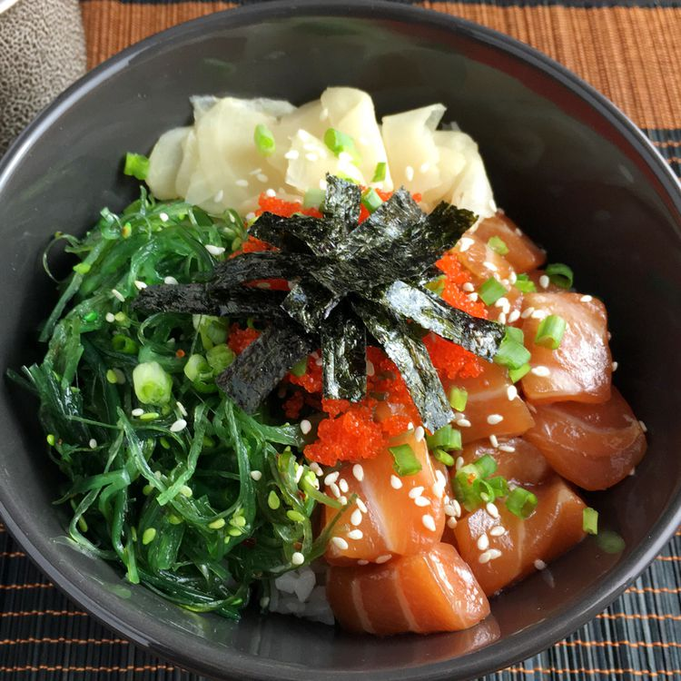

Salmon Poke Bowl

I've always loved seafood, but going out to sushi
restaurants can be really expensive, especially if you
crave sushi-grade seafood as much as I do. That's why I
wanted to share this recipe with you! Having the option
to do it how I want to do it without breaking the bank
is such a grade way to change up your food routine.
Check out the recipe!
Ingredients
- 4 cups cooked rice
- ¼ cup soy sauce
- 4 teaspoons rice wine vinegar
- 4 teaspoons sesame oil
- ¼ teaspoon chile oil (Optional)
- 12 ounces sashimi-grade salmon, cut into
small cubes
Optional Toppings
- 1 avocado, sliced, or to taste
- 1 red bell pepper, sliced, or to taste
- ¼ cup shelled edamame, or to taste
- 4 sheets dried seaweed, cut into strips, or
to taste
- 1 tablespoon pickled ginger, or to taste
- 1 tablespoon furikake (Japanese nori seasoning),
or to taste
- 2 tablespoons chopped green onion, or to taste
- 1 tablespoon sesame seeds, or to taste
Steps
- Divide rice among 4 bowls.
- Combine soy sauce, rice wine vinegar, sesame oil, and chile oil in a bowl; add salmon and toss to coat. Divide among the 4 bowls.
- Top bowls with avocado, bell pepper, edamame, seaweed, pickled ginger, and furikake seasoning. Garnish with chopped green onion; sprinkle with sesame seeds.